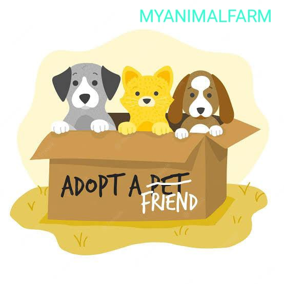

Overview
Purpose
[Our website aims to promote pet adoption, reduce the number of animals in shelters, and provide information about animal care. It also offers resources and tools for potential adopters to find the right pet for their lifestyle and support throughout the adoption process..]
Audience
[Our website is to connect prospective adopters with the perfect pet and support them through every step of the adoption journey..]
Branding
Website Logo
Style Guide
Color Palette
Palette URL:
https://coolors.co/396e94-e7c24f-c67b31-a43312-6e281e-381d2a-aabd8c| Primary | Secondary | Accent 1 | Accent 2 |
|---|---|---|---|
| [#C67B31] | [#A43312] | [#6E281E] | [#381D2A] |
Typography
Heading Font: lato
Paragraph Font: pacifico
Normal paragraph example
The best animal Farrm in Nigeria, the Animal Farm, offers a safe haven for rescued animals. Currently in 2023, we have been Family owned and operated, providing a natural habitat for rescued wildlife. Our sanctuary(Farm) covers hundreds of acres, giving animals room to roam and live in a stress-free environment. Our mission is to provide a permanent home for wild animals in need and to educate the public on the importance of animal welfare.
Colored paragraph example
Adoptions at the Animal Farm vary from pets that are well-suited for families, to those that require experienced and dedicated owners. No matter what type of companion you are seeking, the Wild Animal Sanctuary can help you find the perfect match. Whether you're looking for a low-maintenance pet or one that requires a more active lifestyle, we have a variety of animals ready for adoption and eager to find their forever home.
Navigation
Site Map
Wireframes
Home